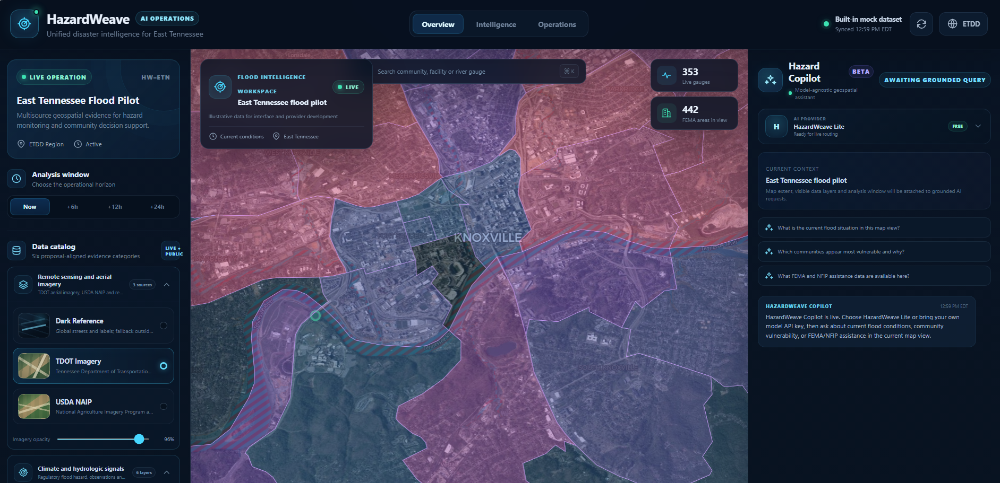
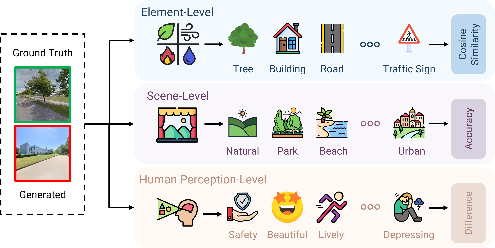
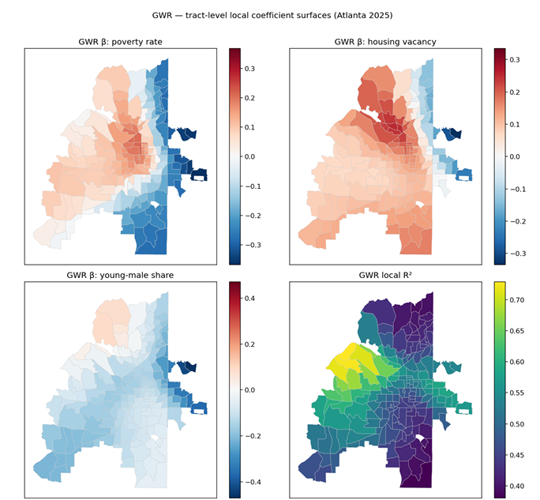
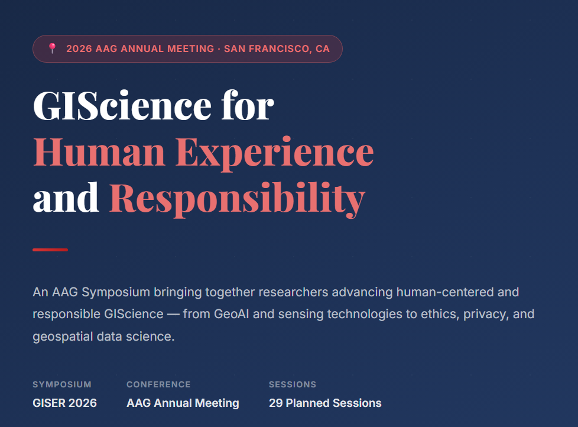
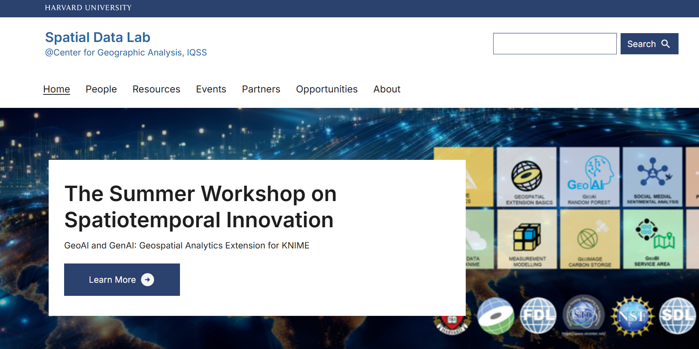
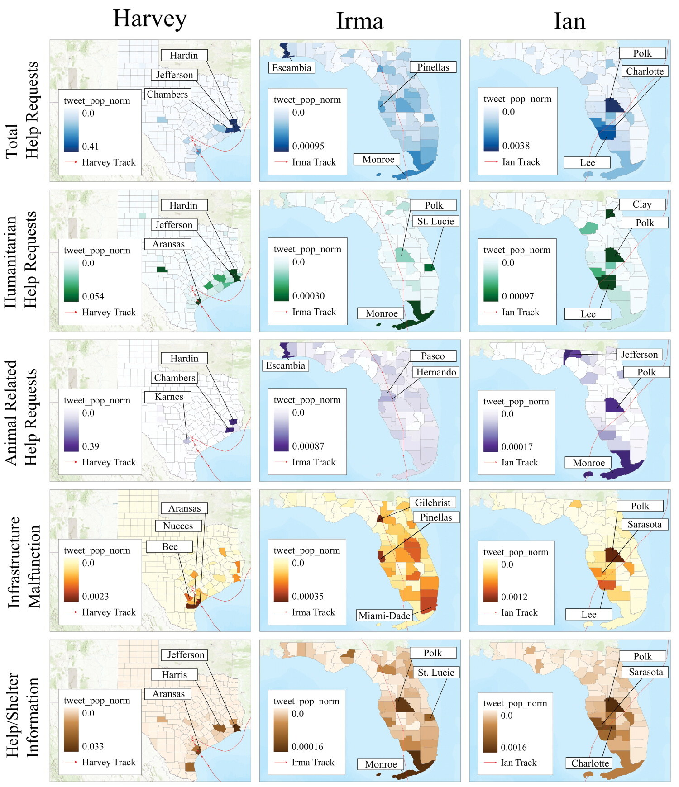
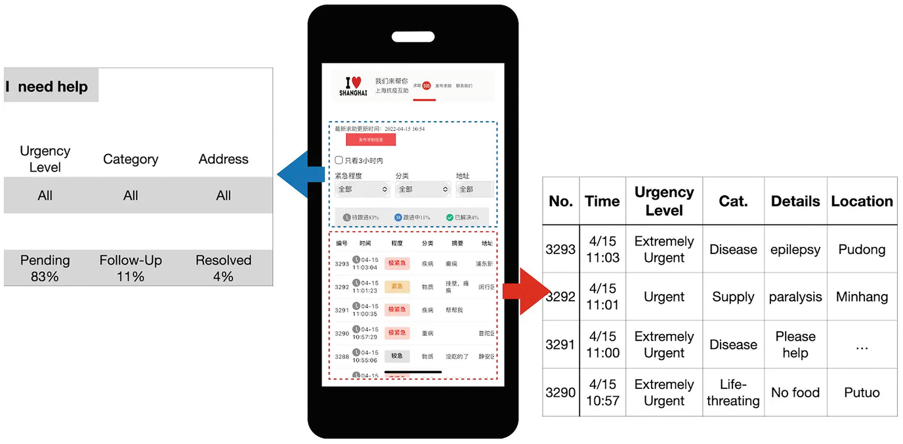
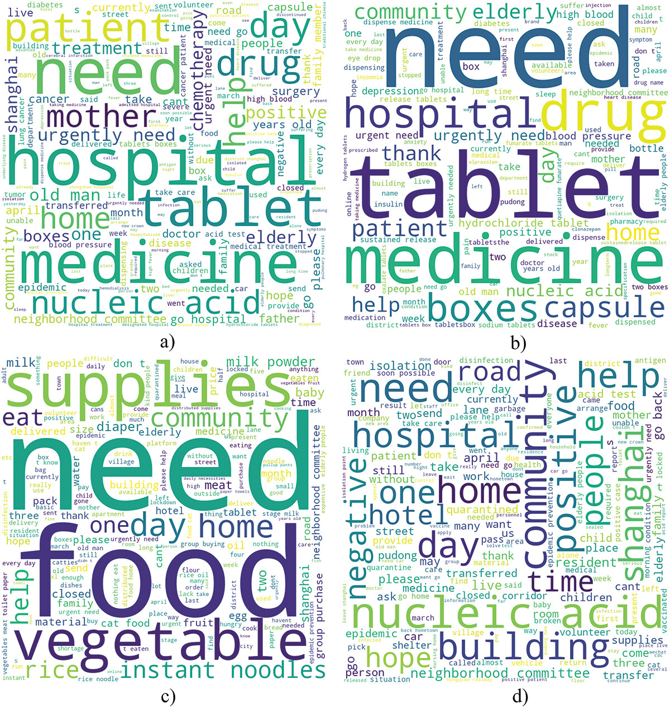

HazardWeave Receives AI-Tennessee THRIVE Support
Dr. Bing Zhou received support from the AI-Tennessee THRIVE Program to lead HazardWeave, an AI-supported unified platform for smart disaster management.

Dr. Bing Zhou received support from the AI-Tennessee THRIVE Program to lead HazardWeave, an AI-supported unified platform for smart disaster management.

Junbo Wang and collaborators presented SounDiT, a framework for generating landscapes from sound, at AAG 2026. The work was a finalist in the GISS-SG Student Paper Competition.

NORA introduces an autonomous research agent designed to support end-to-end spatial data science workflows.
Dr. Zhou chaired the GeoAI and Deep Learning Symposium session on GeoAI for Disaster Resilience during the 2026 AAG Annual Meeting in San Francisco.

Dr. Zhou participated in organizing sessions focused on ethics in GIScience, AI ethics in geography education, and spatial equity.

Dr. Zhou is mentoring students through the Harvard Center for Geographic Analysis Spatial Data Lab Internship Program, including research on extreme heat and human behavior change.

Dr. Zhou and collaborators present a large-language-model framework for rapid disaster damage estimation using social media evidence across multiple hurricane events.

This book chapter explores how natural language processing methods can support human geography research and spatial understanding.

The study uses social sensing to map humanitarian needs during the Shanghai lockdown, revealing spatial disparities in access to essential resources.